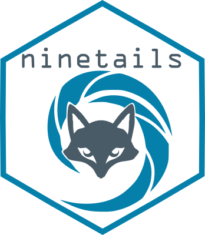

Predict non-adenosine residues in cDNA tails
Source:R/ninetails_core_functions_cDNA_model.R
predict_nonA_cdna.RdClassifies sliding windows of raw tail signals with the orientation- specific cDNA model and calls non-adenosine residues.
Arguments
- signal_list
Named list of numeric vectors. Raw tail signals with flanks, as returned by
extract_tail_signals_cdna.- tail_coordinates
Data frame. Output of
read_tail_coordinates_cdna(columnsread_id,tail_start,tail_endandpolya_lengthare used).- tail_type
Character string. Orientation of the reads:
"polyA"or"polyT".- keras_model_path
Character string or missing. Full path of the
.h5file with a Keras model. If missing (default), the pretrained cDNA model for the giventail_typeis loaded.
Value
A data frame with one row per called non-adenosine residue:
- read_id
Character. Read identifier
- prediction
Character. Residue in the RNA tail (C, G or U)
- est_nonA_pos
Numeric. Estimated position from the 3' end of the tail (nucleotides)
- score
Numeric. Highest non-A score of the call
Details
For every read the tail signal is normalised
(normalise_tail_cdna), cut into windows
(create_tail_windows_cdna), converted to gramian angular
fields (create_gaf_cdna) and classified. Calls are made
with call_nonA_cdna using thresholds frozen together with
the models.
The position of each call is reported as the distance from the 3' end of the RNA tail in nucleotides. Poly(A) reads end with the 3' end of the tail, poly(T) reads begin with it:
poly(A):
(tail_end - position) / samples_per_ntpoly(T):
(position - tail_start) / samples_per_nt
where samples_per_nt = (tail_end - tail_start) / polya_length.